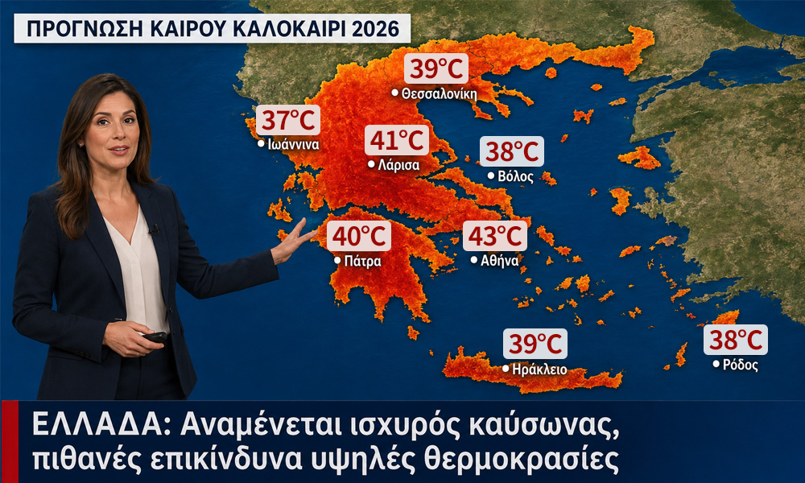
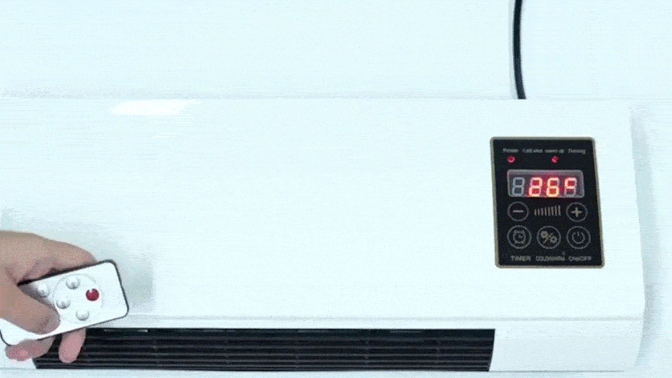

Διαφήμιση
Ιστορικοί Καύσωνες το 2026: Αυτό το Κλιματιστικό των €137.99 που Σχεδιάστηκε από Έλληνα Μηχανικό Εκθέτει τα Πανάκριβα Συστήματα

Πείτε αντίο στα απλησίαστα κλιματιστικά και τα ακριβά συνεργεία. Αυτή η νέα συσκευή ψύξης δεν απαιτεί καμία εγκατάσταση, παγώνει κάθε δωμάτιο σε λίγα λεπτά και σας προστατεύει από την παγίδα των εξωφρενικών λογαριασμών ρεύματος.

Οι μετεωρολόγοι συμφωνούν: οι προγνώσεις δείχνουν ότι το καλοκαίρι του 2026 πρόκειται να σπάσει κάθε προηγούμενο ρεκόρ. Για εκατομμύρια ανθρώπους, όμως, ο επικείμενος καύσωνας αποτελεί μια τεράστια πρόκληση.
Οι τιμές του ηλεκτρικού ρεύματος βρίσκονται ήδη στα ύψη και συνεχίζουν να ανεβαίνουν ασταμάτητα. Όποιος προσπαθεί να δροσίσει το σπίτι του με μια συμβατική μονάδα κλιματισμού αυτή τη στιγμή, αντιμετωπίζει μια πραγματική οικονομική πίεση.
Το Πρόβλημα με τον Παραδοσιακό Κλιματισμό:
• Αστρονομικό Αρχικό Κόστος: Οι καταναλωτές συνήθως πρέπει να διαθέσουν αρκετές χιλιάδες ευρώ μόνο για την αγορά της μονάδας.
• Περίπλοκη Εγκατάσταση: Εβδομάδες αναμονής για τεχνικούς, θόρυβος, αναστάτωση και ακριβές τρύπες στους τοίχους σας.
• Η Καθημερινή Ενεργειακή Παγίδα: Η λειτουργία ενός τυπικού κλιματιστικού μπορεί εύκολα να καταναλώσει έως και €10 σε ρεύμα την ημέρα. Αυτό σημαίνει μια επιπλέον επιβάρυνση έως και €300 το μήνα — μόνο και μόνο για μια μικρή ανακούφιση από τη ζέστη.
Με λίγα λόγια: είναι μια πολυτέλεια που σχεδόν κανείς δεν μπορεί πλέον να αντέξει οικονομικά — ή δεν θέλει πια να πληρώνει.
Το Σημείο Καμπής: Ένας Εμπειρογνώμονας του Κλάδου Αποκαλύπτει την Αλήθεια
Εδώ ακριβώς παρενέβη ένας πρώην μηχανικός. Πέρασε χρόνια δουλεύοντας στο τμήμα Έρευνας και Ανάπτυξης ενός από τους μεγαλύτερους κατασκευαστές κλιματιστικών παγκοσμίως, βιώνοντας από πρώτο χέρι πώς η ψύξη των σπιτιών γίνεται τεχνητά ακριβή για τον τελικό καταναλωτή.
Ο στόχος του ήταν ξεκάθαρος: να δημιουργήσει μια προσιτή λύση για όλους. Μια συσκευή που προσφέρει συνθήκες Αρκτικής αλλά δεν απαιτεί απολύτως καμία εγκατάσταση και καταναλώνει ελάχιστο ρεύμα.
Μετά από μια φάση ανάπτυξης τριών ετών, επιτέλους τα κατάφερε.
Μιλάμε για το Coolizi Coolzy.

Η ιστορία πίσω από την καινοτομία
Ο εγκέφαλος πίσω από το Coolizi Coolzy είναι ο Έλληνας μηχανικός Λουκάς Βασιλείου. Όταν η τεχνική εταιρεία του πατέρα του βρισκόταν στα πρόθυρα της χρεοκοπίας, ο Λουκάς παραιτήθηκε από την εταιρική του δουλειά για να βοηθήσει. Εν μέσω της ανάπτυξης του προϊόντος, ο πατέρας του έφυγε αναπάντεχα από τη ζωή. Ο Λουκάς συνέχισε μόνος του — και τα κατάφερε: έσωσε την οικογενειακή επιχείρηση και όλες τις 13 θέσεις εργασίας στην Αθήνα.
Σήμερα, το Coolizi Coolzy καταρρίπτει κάθε ρεκόρ πωλήσεων. Παρά την τεράστια ζήτηση, ο Λουκάς αρνείται να καταφύγει στη φθηνή μαζική παραγωγή:
"Πολυεθνικές ήθελαν να αγοράσουν την πατέντα του Coolizi Coolzy για αρκετά εκατομμύρια ευρώ και να μεταφέρουν την παραγωγή στο εξωτερικό. Αρνήθηκα. Κατασκευάζουμε τα προϊόντα μας αυστηρά σύμφωνα με τα υψηλά πρότυπα ποιότητας του πατέρα μου. Προτιμώ να καθυστερήσει λίγο η αποστολή τώρα, παρά να πουλήσω ένα κατώτερο προϊόν."
Μια ματιά στο εσωτερικό του Coolizi Coolzy δείχνει ακριβώς γιατί αυτή η εφεύρεση φέρνει την απόλυτη επανάσταση στην αγορά.

Το μυστικό πίσω από την αρκτική ψύξη: Τι κάνει το Coolizi Coolzy τόσο μοναδικό;
Τα συμβατικά συστήματα κλιματισμού βασίζονται σε βαριούς, θορυβώδεις συμπιεστές και χημικά ψυκτικά μέσα. Καταναλώνουν τεράστιες ποσότητες ενέργειας για να ρίξουν τη θερμοκρασία με τη βία. Ο Λουκάς Βασιλείου ανέτρεψε πλήρως αυτή την ξεπερασμένη λογική.
Το Coolizi Coolzy χρησιμοποιεί μια εξελιγμένη αρχή τεχνολογίας θερμικής απορρόφησης. Η συμπαγής συσκευή απορροφά τον ζεστό και αποπνικτικό αέρα του εσωτερικού χώρου και τον διοχετεύει μέσω ενός εσωτερικά σφραγισμένου θαλάμου ψύξης. Ένα ειδικό νανο-φίλτρο σε σχήμα κηρήθρας αφαιρεί τη θερμική ενέργεια από τον αέρα σε μοριακό επίπεδο, μετατρέποντάς τον αμέσως σε μια κρυστάλλινη, ευχάριστα ξηρή και παγωμένη ροή αέρα.
Το αποτέλεσμα είναι μια καθαρή τεχνολογία που είναι απολύτως ασυναγώνιστη στην αγορά σε τρεις κύριους τομείς:
• Χαμηλότερη κατανάλωση ρεύματος: Ενώ μια κλασική μονάδα κλιματιστικού τραβάει έως και 2.000 watt από το δίκτυο, το Coolizi Coolzy χρειάζεται μόλις 45 watt. Αυτό είναι λιγότερο από μια παραδοσιακή λάμπα πυρακτώσεως! Η ψύξη του χώρου σας θα σας κοστίζει μόνο λίγα λεπτά του ευρώ την ημέρα.
• Μηδενική ταλαιπωρία εγκατάστασης (Χωρίς σωλήνα εξαγωγής): Οι παραδοσιακές φορητές μονάδες απαιτούν έναν παχύ σωλήνα για την αποβολή του θερμού αέρα έξω από ένα ανοιχτό παράθυρο — γεγονός που ειρωνικά επιτρέπει στη ζέστη να ξαναμπεί μέσα. Επειδή το Coolizi Coolzy εξουδετερώνει τη θερμική ενέργεια εσωτερικά, λειτουργεί εντελώς χωρίς σωλήνα. Απλώς συνδέστε το στην πρίζα, ενεργοποιήστε το και είστε έτοιμοι. Μπορείτε να το μεταφέρετε εύκολα από δωμάτιο σε δωμάτιο.
• Τέλεια ισορροπημένη ποιότητα αέρα: Τα συνηθισμένα κλιματιστικά ξηραίνουν εντελώς τον αέρα, κάτι που συχνά οδηγεί σε κρυολογήματα, πονόλαιμο ή φαγούρα στα μάτια. Η θερμική τεχνολογία του Coolizi Coolzy φιλτράρει ταυτόχρονα τα σωματίδια σκόνης, παρέχοντας μια φυσική, αναζωογονητική ποιότητα αέρα που είναι εξαιρετικά απαλή για το αναπνευστικό σας σύστημα.

Τι λένε οι πελάτες για το Coolizi Coolzy:
⭐⭐⭐⭐⭐ "Αρχικά ήμουν σκεπτικός αν μια τόσο συμπαγής συσκευή χωρίς τεράστιο σωλήνα εξαγωγής θα μπορούσε να αντέξει την αφόρητη ζέστη του τελευταίου ορόφου. Αλλά το Coolizi Coolzy με εξέπληξε ευχάριστα. Σε μόλις 15 λεπτά, το υπνοδωμάτιό μου από τους 28 βαθμούς έπεσε στους 19 βαθμούς. Καταλαβαίνεις αμέσως την premium ποιότητα· σίγουρα δεν είναι κάποιο φτηνιάρικο εισαγόμενο προϊόν. Αξίζει μέχρι και το τελευταίο λεπτό του ευρώ!" – Δημήτρης Κ. από Αθήνα
⭐⭐⭐⭐⭐ "Πέρυσι το καλοκαίρι, σχεδόν δεν έκλεισα μάτι λόγω της ζέστης. Μια παραδοσιακή μονάδα κλιματισμού δεν ήταν επιλογή για εμάς λόγω των σταδιακά αυξανόμενων τιμών του ρεύματος και του υψηλού κόστους εγκατάστασης στον τοίχο. Τώρα λειτουργούμε το Coolizi Coolzy στο υπνοδωμάτιό μας σχεδόν κάθε βράδυ. Είναι απίστευτα αθόρυβο, βγάζει δροσερό, φρέσκο αέρα και καταναλώνει πολύ λίγη ενέργεια. Μετά βίας βλέπω διαφορά στον λογαριασμό ρεύματος. Επιτέλους μπορώ να κοιμηθώ ξανά όλη τη νύχτα." – Ελένη Τ. από Θεσσαλονίκη
⭐⭐⭐⭐⭐ "Το κλασικό κλιματιστικό μου προκαλούσε πάντα ξηρότητα στον λαιμό και φαγούρα στα μάτια σχεδόν αμέσως. Με το Coolizi Coolzy, είναι τελείως διαφορετικά: ο αέρας μοιάζει με φρέσκια θαλασσινή αύρα, απόλυτα ευχάριστος. Επειδή η μονάδα είναι τόσο ελαφριά, την έχω στο γραφείο μου κατά τη διάρκεια της ημέρας και τη μεταφέρω στο υπνοδωμάτιο το βράδυ. Απλώς το βάζεις στην πρίζα και το απολαμβάνεις. Αυτό θα πει εξαιρετική ελληνική σχεδίαση." – Μιχάλης Μ. από Πάτρα
⭐⭐⭐⭐⭐ "Έψαχνα μια εύκολη λύση για το εξοχικό μου. Δεν ήθελα τεχνίτες να τρυπάνε τους τοίχους μου. Το Coolizi Coolzy έφτασε ταχύτατα, έχει απίστευτα κομψό σχεδιασμό και λειτούργησε άψογα από την πρώτη μέρα. Το γεγονός ότι στηρίζω μια ελληνική οικογενειακή επιχείρηση και τις τοπικές θέσεις εργασίας έκανε την απόφαση ακόμα πιο εύκολη. Συστήνεται ανεπιφύλακτα για το καλοκαίρι!" – Μιχάλης Β. από Αθήνα

Συχνές Ερωτήσεις
• Απαιτεί το Coolizi Coolzy περίπλοκη εγκατάσταση; Όχι, καθόλου. Δεν χρειάζεται τεχνικός, εργαλεία ή τρύπες στους τοίχους σας. Απλώς τοποθετήστε τη συσκευή όπου θέλετε, συνδέστε την σε μια απλή πρίζα και ενεργοποιήστε την.
• Πρέπει να το γεμίζω συνεχώς με νερό; Όχι, η ενσωματωμένη δεξαμενή είναι εξαιρετικά αποδοτική. Ένα μόνο γέμισμα αρκεί για να λειτουργεί το Coolizi Coolzy συνεχόμενα για 8–10 ώρες—ιδανικό για έναν πλήρη και ξεκούραστο νυχτερινό ύπνο.
• Είναι η συσκευή πολύ θορυβώδης για την κρεβατοκάμαρα; Όχι. Σε αντίθεση με τις θορυβώδεις μονάδες κλιματισμού με συμπιεστή, το Coolizi Coolzy σχεδιάστηκε ειδικά για αθόρυβη λειτουργία. Δεν θα σας ενοχλήσει καθόλου, είτε βλέπετε τηλεόραση είτε προσπαθείτε να κοιμηθείτε.
• Πόσο μεγάλη περιοχή μπορεί να ψύξει αποτελεσματικά; Μπορεί εύκολα να καλύψει 80 έως 120 τετραγωνικά μέτρα. Απλώς αφήστε τις εσωτερικές πόρτες ανοιχτές, ώστε ο παγωμένος αέρας να κυκλοφορεί βέλτιστα και να δροσίζει αποτελεσματικά ολόκληρο το σπίτι ή το διαμέρισμά σας.

Από πού μπορώ να αγοράσω το Coolizi Coolzy;
Για να διασφαλιστεί ότι όλοι μπορούν να αποκτήσουν το Coolizi Coolzy, είναι διαθέσιμο αποκλειστικά μέσω του επίσημου ηλεκτρονικού καταστήματος. Ο Λουκάς παρακάμπτει σκόπιμα τους μεσάζοντες και τις μεγάλες εταιρείες, που διαφορετικά θα ανέβαζαν την τιμή σε αρκετές χιλιάδες ευρώ.
100% Εγγύηση Επιστροφής Χρημάτων (Χωρίς Ερωτήσεις)
Επειδή το Coolizi Coolzy ήταν το τελευταίο έργο πάθους που δούλεψε ο Λουκάς με τον αείμνηστο πατέρα του, στόχος του δεν είναι το τεράστιο κέρδος. Θέλει απλώς κάθε πελάτης να είναι ικανοποιημένος και να διασφαλίσει ότι μπορεί να πληρώνει το αφοσιωμένο προσωπικό του.
Γι' αυτό η πολιτική του είναι απλή: αν δεν μείνετε απόλυτα ενθουσιασμένοι, παίρνετε τα χρήματά σας πίσω, χωρίς καμία δικαιολογία και χωρίς καμία ερώτηση. Δοκιμάστε το Coolizi Coolzy για 1 έως 2 μήνες και αν δεν μείνετε πλήρως ικανοποιημένοι, θα λάβετε επιστροφή χρημάτων 100%! Δεν διατρέχετε απολύτως κανέναν κίνδυνο.
Μην ξεγελιέστε από φθηνές απομιμήσεις! - Εάν θέλετε να είστε σίγουροι ότι αγοράζετε το αυθεντικό προϊόν, ακολουθήστε τα παρακάτω βήματα:
Σημείωση: Η προσφορά 50% είναι αυτή τη στιγμή ενεργή!
Ελέγξτε τον παρακάτω σύνδεσμο για να δείτε αν η προσφορά ισχύει ακόμα και εξασφαλίστε τη δική σας συσκευή πριν εξαντληθεί το τρέχον απόθεμα:
👉 [ΠΑΤΗΣΤΕ ΕΔΩ: Επισκεφθείτε την Επίσημη Ιστοσελίδα του Κατασκευαστή με 50% Έκπτωση]
⭐⭐⭐⭐⭐ Δημήτρης Λ. από Αθήνα: "Δροσίζει ολόκληρο το διαμέρισμα των 93 m²! Ήμουν δύσπιστος για την εμβέλειά του, αλλά όντως λειτουργεί. Αφήνουμε τις εσωτερικές πόρτες ανοιχτές και ο παγωμένος αέρας απλώνεται παντού. Η αποπνικτική ζέστη εξαφανίστηκε τελείως."
⭐⭐⭐⭐⭐ Μαρία Ρ. από Θεσσαλονίκη: "Επιτέλους, σταμάτησα να τρέμω τον λογαριασμό του ρεύματος! Το δουλεύουμε ασταμάτητα τις ζεστές μέρες. Η εφαρμογή του μετρητή μου μόλις που δείχνει διαφορά στην κατανάλωση. Όταν σκέφτομαι τον γείτονά μου που πληρώνει €10 τη μέρα για να δουλεύει το παλιό του σύστημα, ξέρω ότι έκανα τη σωστή επιλογή."
⭐⭐⭐⭐⭐ Μιχάλης Β. από Πάτρα: "Το βγάζεις από το κουτί, το ανάβεις και έχεις πάγο. Χωρίς σωλήνες εξαγωγής, χωρίς τρύπες, χωρίς το άγχος των τεχνικών. Αυτό ακριβώς έψαχνα για το νοικιασμένο διαμέρισμά μου. Απλώς το στήνεις, το βάζεις στην πρίζα και το απολαμβάνεις αμέσως. Πανέξυπνη εφεύρεση."
⭐⭐⭐⭐⭐ Ελένη Σ. από Ηράκλειο: "Κοιμόμαστε πάλι σαν πουλάκια. Εκείνες οι υγρές καλοκαιρινές νύχτες ήταν κάποτε απόλυτος εφιάλτης. Το Coolizi Coolzy είναι αθόρυβο και κρατάει το υπνοδωμάτιο υπέροχα δροσερό. Το καλοκαίρι του 2026 μπορεί να έρθει άφοβα — είμαστε πλήρως προετοιμασμένοι."
⭐⭐⭐⭐⭐ Γιώργος Χ. από Λάρισα: "Εξαιρετική ποιότητα και ένα προϊόν φτιαγμένο με μεράκι. Καταλαβαίνεις αμέσως ότι βασίζεται σε κορυφαία ελληνική σχεδίαση και όχι σε φθηνά πλαστικά σκουπίδια από το εξωτερικό. Είναι μια φοβερή τοπική επιχείρηση που χάρηκα πολύ να στηρίξω με αυτή την αγορά."
⭐⭐⭐⭐⭐ Γιάννης Μ. από την Αθήνα: "Γλίτωσα χιλιάδες ευρώ! Ένας τοπικός εργολάβος ήθελε να με χρεώσει σχεδόν €3.000 για την εγκατάσταση κεντρικού συστήματος κλιματισμού. Το Coolizi Coolzy δροσίζει τα δωμάτιά μου εξίσου καλά, κοστίζει ένα κλάσμα της τιμής και σχεδόν δεν καταναλώνει ρεύμα."
⭐⭐⭐⭐⭐ Ελένη Β. από τη Θεσσαλονίκη: "Τέλος στα ξηρά μάτια και τα καλοκαιρινά κρυολογήματα. Το κοινό κλιματιστικό μου προκαλούσε αμέσως πονόλαιμο και ξηρότητα στα μάτια. Ο αέρας από το Coolizi Coolzy είναι απίστευτα άνετος, φρέσκος και φυσικά δροσερός. Ιδανικό για όσους υποφέρουν από αλλεργίες και για όσους έχουν ευαισθησία."
✅ Μηδενική ανάγκη εγκατάστασης
✅ Δροσίζει ολόκληρα διαμερίσματα
✅ Ελληνική σχεδίαση